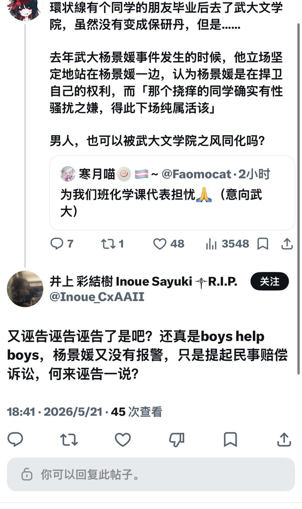

「诬告」是指捏造事实、伪造证据，故意向司法机关或相关部门虚假告发，意图使他人受到错误的刑事追诉或行政惩戒。
要构成法律意义上的「诬告」，通常必须同时满足以下三个条件：
凭空捏造：指控的事实完全是虚构、伪造的。肖同学当时根本不是在自慰，并且法院已认定肖同学不构成性骚扰，但杨景媛依然坚持认为肖同学是在性骚扰的话那又有什么办法呢。
主观恶意：明知对方无辜，却故意向警察、检察官或相关公权力机关提出指控。您也承认「杨景媛提起民事赔偿诉讼」不是吗？
特定目的：目的是为了让无辜者受到刑事处罚或行政（惩戒）处分。「杨景媛诬告的真正目的是迫害肖同学」目前没有确凿证据，这也是祂至今能逍遥法外的原因。但「杨景媛之心，人人皆知」不是吗？🤭
要构成法律意义上的「诬告」，通常必须同时满足以下三个条件：
凭空捏造：指控的事实完全是虚构、伪造的。肖同学当时根本不是在自慰，并且法院已认定肖同学不构成性骚扰，但杨景媛依然坚持认为肖同学是在性骚扰的话那又有什么办法呢。
主观恶意：明知对方无辜，却故意向警察、检察官或相关公权力机关提出指控。您也承认「杨景媛提起民事赔偿诉讼」不是吗？
特定目的：目的是为了让无辜者受到刑事处罚或行政（惩戒）处分。「杨景媛诬告的真正目的是迫害肖同学」目前没有确凿证据，这也是祂至今能逍遥法外的原因。但「杨景媛之心，人人皆知」不是吗？🤭
